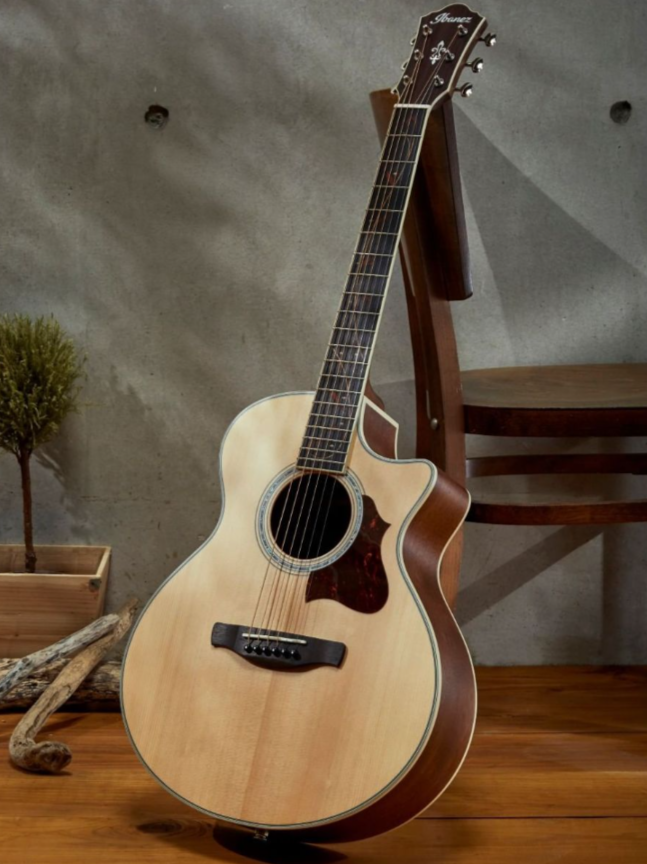
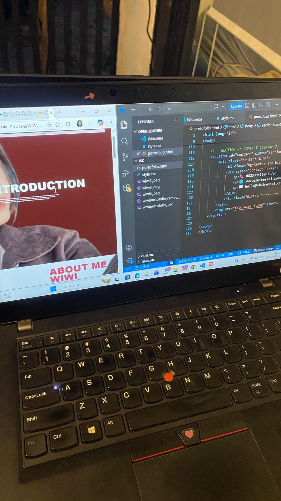
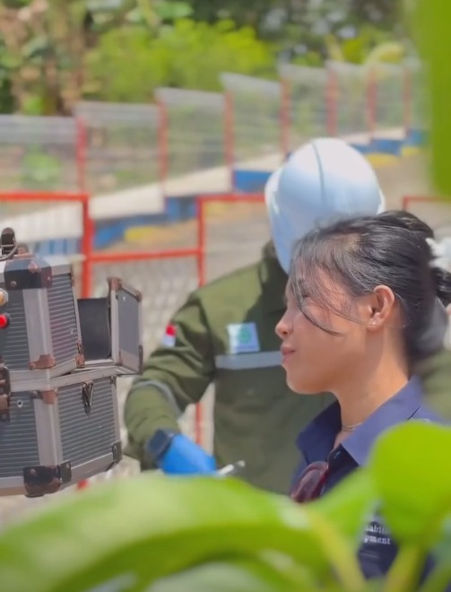
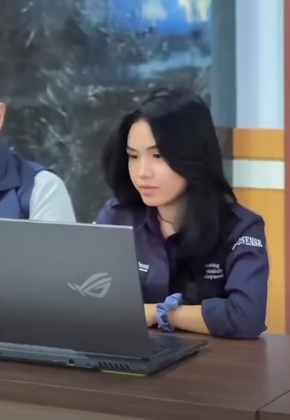

BEST EXPERIENCE
MUSIC & TRAVEL VOYAGE
Pengalaman terbaik saya adalah menggabungkan musik dan traveling. Saya belajar bahwa adaptabilitas adalah kunci utama, baik di atas panggung maupun di dunia Informatika.
Halo! Saya Wiwi Ressai, mahasiswi Informatika Unsulbar yang percaya bahwa teknologi dan kreativitas adalah paduan sempurna. Sebagai seorang extrovert, saya melihat dunia sebagai ruang kolaborasi tanpa batas.
Selamat datang di portofolio kreatif saya, tempat logika kode bertemu dengan estetika visual.
Dibalik layar monitor, saya adalah seorang petualang. Traveling adalah cara saya memahami perspektif baru. Saya menyukai tantangan, interaksi sosial, dan selalu bersemangat membangun koneksi baru.
Menyelesaikan pendidikan dasar dengan fokus pada pengembangan minat dan bakat awal.
Aktif dalam organisasi siswa dan mulai mengenal dasar-dasar teknologi informasi.
Fokus pada ilmu alam dan mengasah kemampuan komunikasi serta kepemimpinan.
Bermain musik adalah bahasa kedua saya. Melalui instrumen, saya melatih ketajaman intuisi dan disiplin berpikir.
Memiliki kemampuan teknis dalam pengembangan perangkat lunak dan analisis sistem sebagai mahasiswi Unsulbar.



Mengelola citra digital pada perusahaan keluarga yang bergerak di bidang konsultan dan konstruksi.

Membantu koordinasi proyek konstruksi dan memastikan alur komunikasi antara tim dan klien berjalan lancar.
Pengalaman terbaik saya adalah menggabungkan musik dan traveling. Saya belajar bahwa adaptabilitas adalah kunci utama, baik di atas panggung maupun di dunia Informatika.
📞 082339456801
🌐 www.wiwiressai.com
✉️ hello@wiwiressai.com